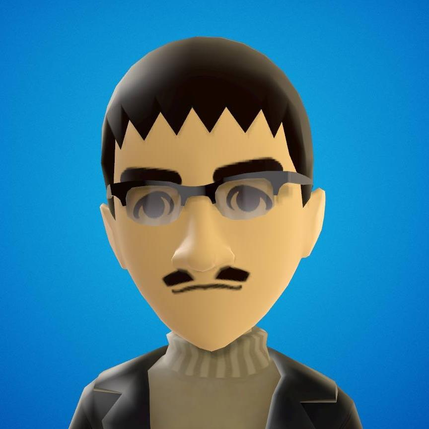

Caio Viktor da Silva Avila
Mestrando em Ciências da Computação pela Universidade Federal do Ceará.
Viciado em animes e HyperDimension Neptunia.
GitHub:
https://github.com/CaioViktor
Pedro Victor da Silva Avila
Cursando Jogos Digitais no Centro Universitário Farias Frito.
Gosta de animes.
Voltar